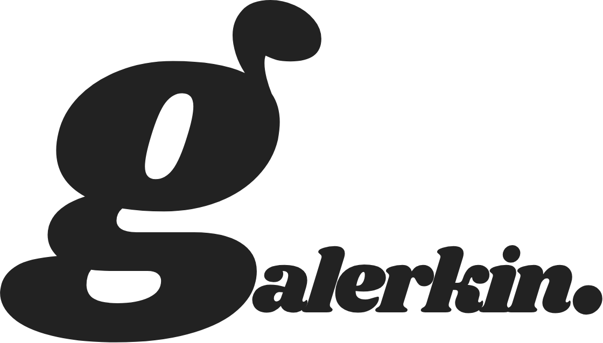

Our Core Focus
We specialise in Model Order Reduction (MOR) and Physics-Informed Neural Networks (PINNs) to transform your simulation workflows.
Galerkin Systems bridges the gap between high-fidelity simulation and real-time performance. We empower engineering teams to unlock computational speed through physics-informed intelligence.

We specialise in Model Order Reduction (MOR) and Physics-Informed Neural Networks (PINNs) to transform your simulation workflows.
By leveraging deep technical expertise in structural mechanics and multiscale modelling, we build bespoke mathematical solvers that drastically reduce compute costs without sacrificing accuracy.